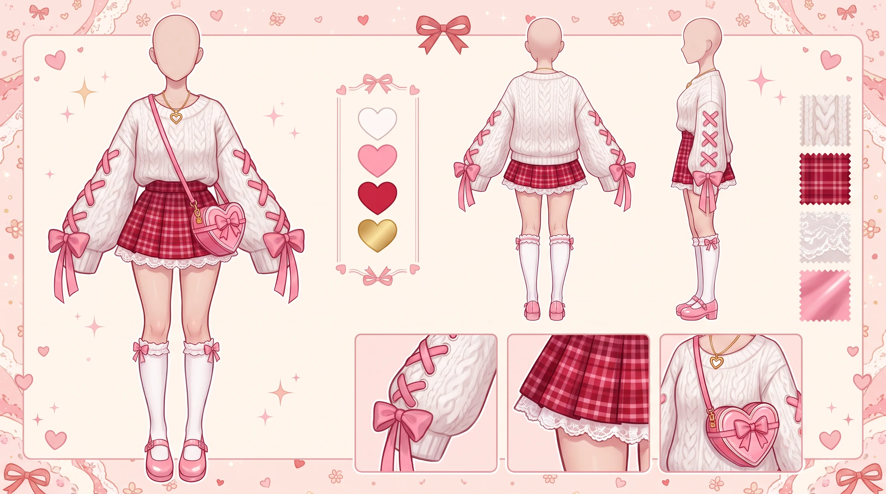
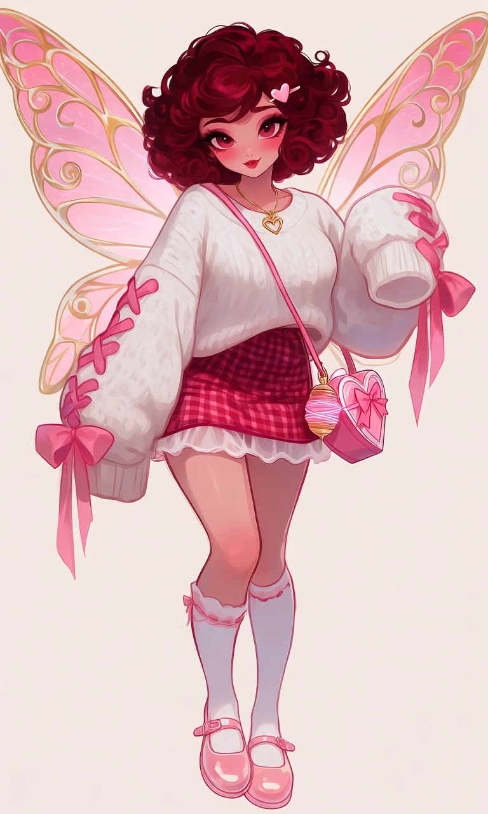
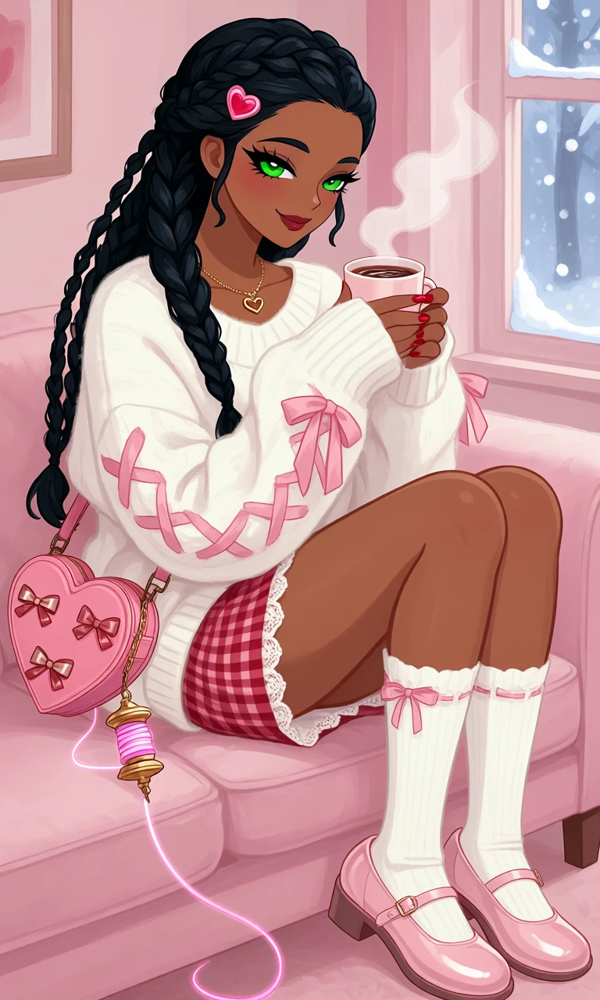

Hugs & Cross-Stitches

Outfit Prompt
Cute cozy Valentine-inspired outfit, oversized feminine fashion, soft white, rose pink, and wine-red color palette.
An extremely oversized soft white knitted sweater with a loose, slouchy silhouette, chunky knit texture, and a ribbed neckline and hem. Extra-long oversized sleeves completely cover the hands. Pretty pink ribbons are threaded in crisscross patterns along the outer sides of both sleeves, ending in delicate pink bows near the cuffs.
A very short, fitted red-and-pink gingham miniskirt with a delicate white underskirt peeking beneath the hem, creating a cute layered silhouette.
Intentionally mismatched white socks: one mid-calf sock and one thigh-high sock, both decorated with delicate pink ribbon trim.
Shiny pastel-pink Mary Jane shoes with rounded toes, thin straps, and small buckles.
A delicate gold necklace featuring two interlocking heart pendants.
A small pink heart-shaped crossbody purse decorated with tiny ribbon bows. A miniature magical ribbon spool hangs from the purse, wrapped with delicate glowing pink thread.
A small pink heart-shaped hair clip and short cherry-red painted fingernails.
Adorable romantic fashion, cozy oversized knitwear, playful gingham patterns, delicate ribbon decorations, charming Valentine's Day aesthetic.
Outfit Examples



